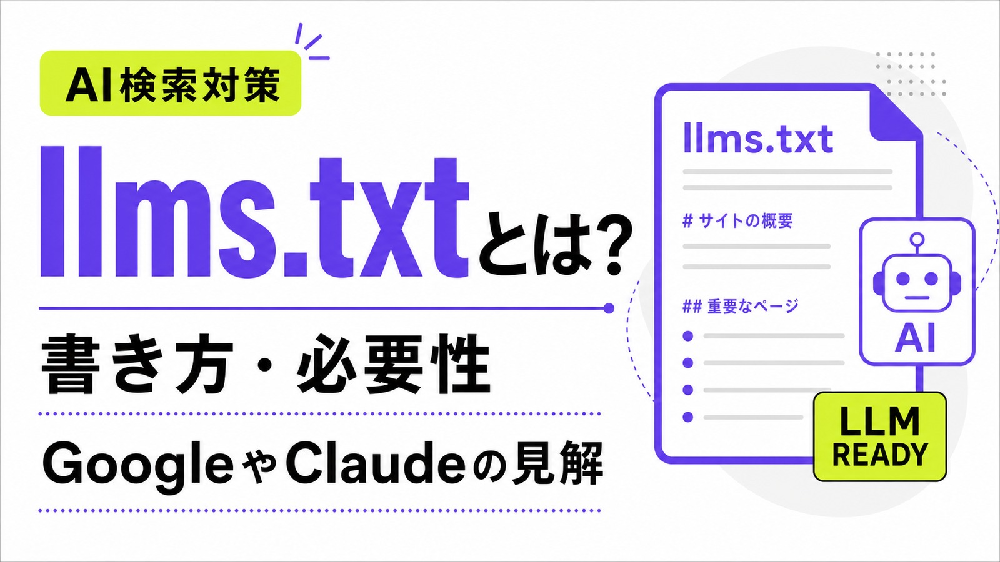
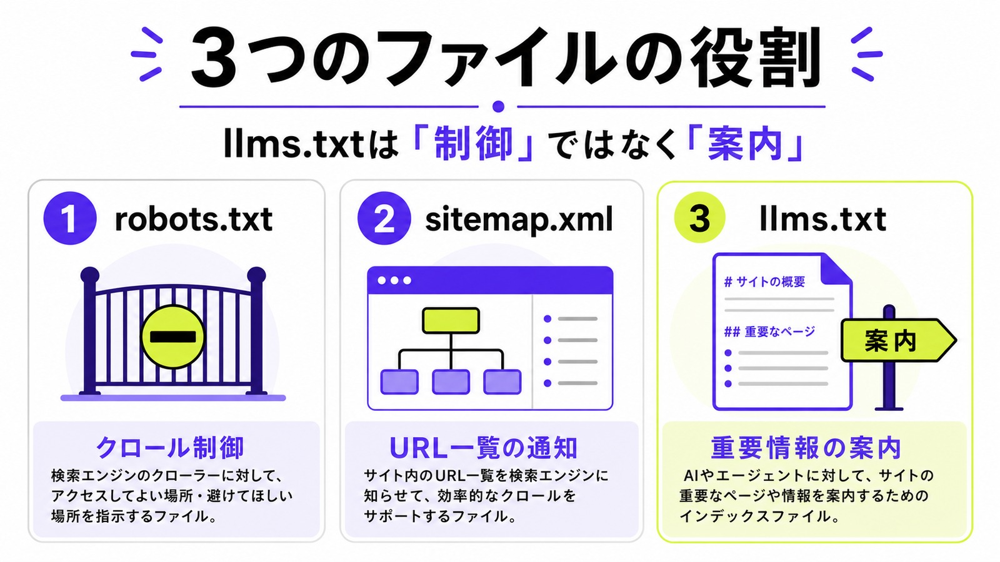
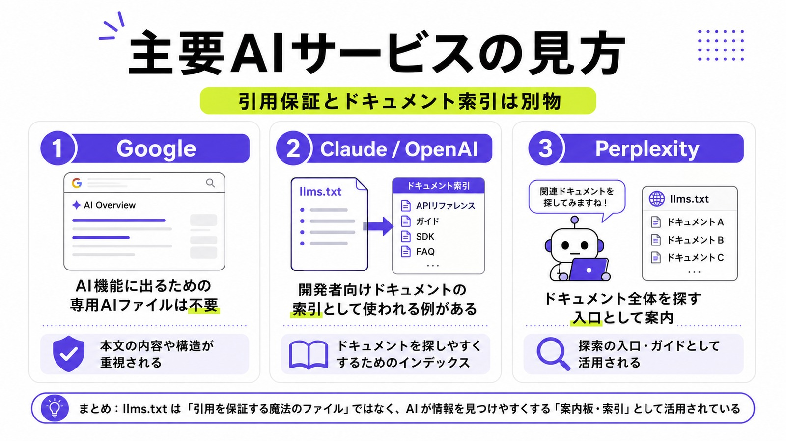
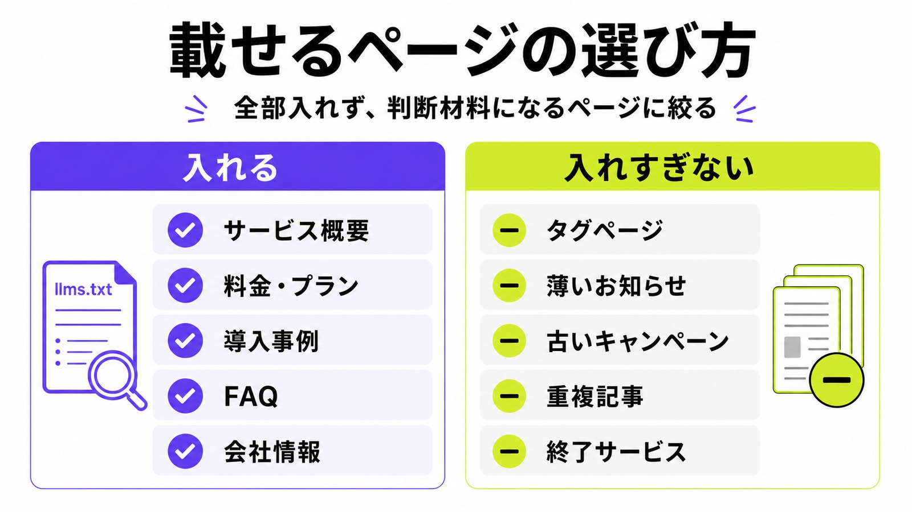
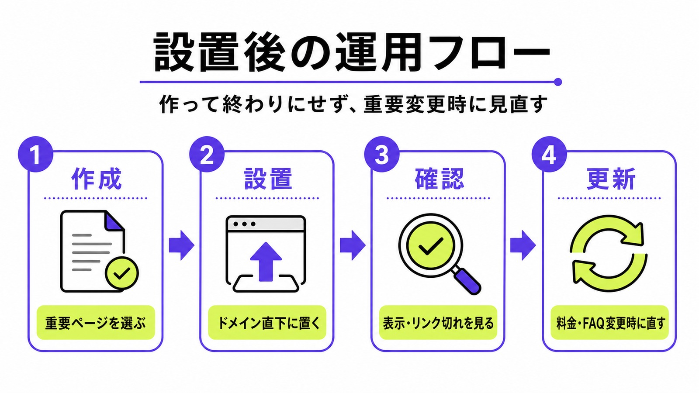
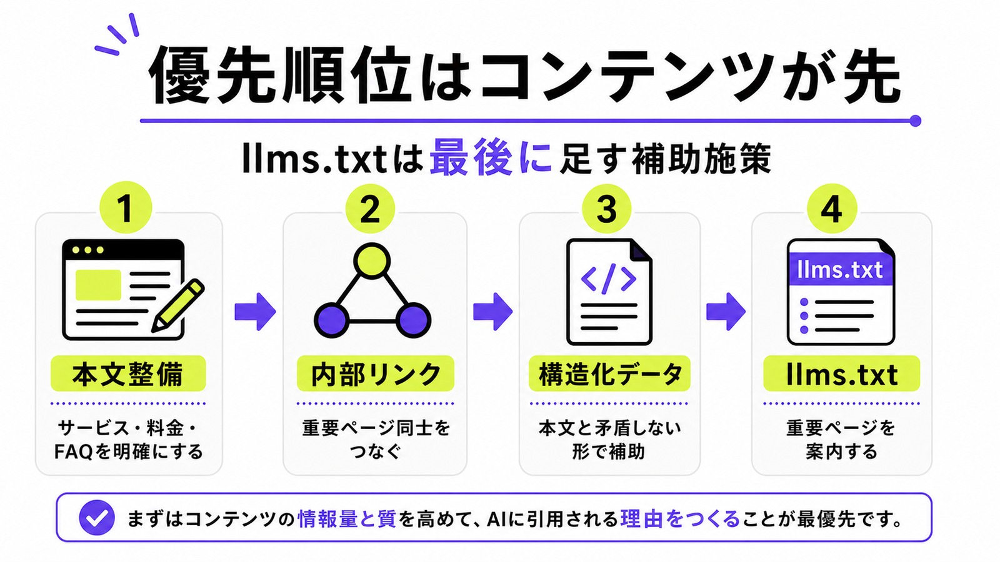

llms.txtとは？書き方・必要性・GoogleやClaudeの見解をわかりやすく解説

AI検索対策やLLMO対策の文脈で、「llms.txtを設置したほうがよいのでは？」という話を見かけるようになりました。
llms.txtは、Webサイトの概要や重要ページをLLMに伝えるためのテキストファイルです。たとえば、サービス概要、料金ページ、事例、FAQ、技術ドキュメントなどをMarkdown形式でまとめ、AIやエージェントがサイトの全体像を把握しやすくする役割を持ちます。
この記事では、llms.txtの意味、Googleや主要LLMサービスの扱い、実際の書き方、設置すべきサイト・優先度が低いサイト、AIに引用されるために本当に重要なことを解説します。
目次

ただし、llms.txtを設置すれば、ChatGPTやClaude、GoogleのAI Overviewに引用されやすくなるわけではありません。
Googleは、AI OverviewsやAI Modeに表示されるために、特別なAI向けファイルや専用マークアップを作る必要はないと明記しています。GoogleのJohn Mueller氏も、llms.txtについて慎重な見方を示しており、現時点では過度に期待すべき施策ではありません。
一方で、Claude CodeやPerplexity、OpenAIの開発者ドキュメントでは、llms.txtがドキュメント一覧の案内用ファイルとして使われています。つまり、llms.txtには一定の使い道があります。ただし、それは「一般的な企業サイトのAI検索対策として必須」という意味ではありません。
llms.txtとは
llms.txtとは、LLMやAIエージェントに向けて、Webサイトの概要や重要ページを伝えるためのMarkdown形式のテキストファイルです。
一般的には、Webサイトのルートディレクトリに設置します。
例：
https://example.com/llms.txtllms.txtには、サイト名、サービスの概要、重要なページへのリンク、補足情報などを記載します。AIに対して「このサイトでは何を扱っているのか」「どのページを見れば重要情報がわかるのか」を伝える案内板のようなものです。
llms.txtの提案元は、このファイルを「LLMが推論時にWebサイトを使いやすくするための情報提供ファイル」と位置づけています。背景には、LLMがWebサイト全体をそのまま理解するにはHTML、ナビゲーション、広告、JavaScript、コンテキスト長などの制約があるという問題があります。
A proposal to standardise on using an
/llms.txtfile to provide information to help LLMs use a website at inference time.
訳すと、「推論時にLLMがWebサイトを使いやすくするため、/llms.txtファイルで情報を提供する標準化案」という意味です。
llms.txtはrobots.txtのAI版ではない
llms.txtは、robots.txtのAI版として語られることがあります。しかし、この表現はやや不正確です。
robots.txtは、クローラーに対してアクセスしてよい場所・避けてほしい場所を伝えるためのファイルです。一方、llms.txtはアクセス制御ではなく、LLMにサイトの重要情報を伝えるための案内ファイルです。
つまり、役割が違います。
| ファイル | 主な目的 | 役割 |
|---|---|---|
| robots.txt | クロール制御 | クローラーにアクセス可否を伝える |
| sitemap.xml | URL一覧の通知 | 検索エンジンにページ一覧を伝える |
| llms.txt | 重要情報の案内 | LLMにサイトの概要や重要ページを伝える |
AIクローラーをブロックしたい場合は、llms.txtではなくrobots.txtを使います。OpenAIも、OAI-SearchBotやGPTBotの扱いはrobots.txtで管理できるとしています。
参考：OpenAI｜Overview of OpenAI Crawlers

llms.txtはAI検索対策として重要なのか
結論から言えば、llms.txtは現時点でAI検索対策の中心に置くべき施策ではありません。
設置してもよいファイルではあります。しかし、GoogleのAI OverviewやAI Modeに表示されるための必須条件ではなく、ChatGPTやClaudeに引用されることを保証するものでもありません。
特に一般的な企業サイト、サービスサイト、オウンドメディアでは、llms.txtよりも優先すべきことがあります。それは、AIが引用しやすい本文、サービス情報、FAQ、比較情報、会社情報、事例を整えることです。
GoogleはAI機能に特別なAI用ファイルは不要としている
Googleは、AI OverviewsやAI Modeに表示されるための追加要件はないとしています。Google検索に表示でき、スニペット表示の対象になれるページであれば、AI機能においても特別な技術要件はありません。
Googleは次のように明記しています。
You don't need to create new machine readable files, AI text files, or markup to appear in these features.
訳すと、「これらの機能に表示されるために、新しい機械可読ファイル、AIテキストファイル、マークアップを作成する必要はない」という意味です。
この一文は、llms.txtの必要性を考えるうえで非常に重要です。Google向けのAI検索対策として、llms.txtを必須施策のように扱うのは無理があります。
GoogleのJohn Mueller氏もllms.txtに慎重な見方を示している
GoogleのJohn Mueller氏は、llms.txtについて「keywords meta tag」に近いものとして見ています。
かつてのkeywords meta tagは、サイト運営者が「このページはこのキーワードに関係する」と自己申告するためのメタタグでした。しかし、検索エンジン側はサイト運営者の自己申告だけを信頼できません。本文そのものを見れば内容を判断できるため、keywords meta tagは検索順位にほぼ意味を持たなくなりました。
llms.txtにも似た問題があります。サイト運営者が「このサイトはこういう内容です」とファイルに書いても、AIや検索エンジン側は最終的に本文を確認する必要があります。
John Mueller氏は、llms.txtについて次のように述べています。
none of the AI services have said they’re using LLMs.TXT
出典：Search Engine Journal｜Google Says LLMs.Txt Comparable To Keywords Meta Tag
また、llms.txtを次のように表現しています。
comparable to the keywords meta tag
出典：Search Engine Journal｜Google Says LLMs.Txt Comparable To Keywords Meta Tag
この発言からも、llms.txtをAI検索対策の決定打として扱うべきではないことがわかります。
Google関連サイトにllms.txtがあっても、Google検索の推奨とは限らない
Google関連の開発者向けページにllms.txtが存在することを根拠に、「Googleもllms.txtを推奨しているのでは？」と考える人もいます。
ただし、John Mueller氏は、Google関連サイトにllms.txtがあることがGoogleの推奨なのかという質問に対して、明確に否定しています。
to be direct, no.
Google関連サイトにllms.txtが存在することと、Google検索がllms.txtを評価・引用判断に使うことは別問題です。
Claude・OpenAI・Perplexityはllms.txtをどう扱っているのか
llms.txtはGoogle向けの必須施策ではありません。とはいえ、主要なAI関連サービスがまったく触れていないわけでもありません。
ここで大事なのは、「llms.txtを置けばAI検索で引用される」という話と、「開発者ドキュメントの索引用にllms.txtを置いている」という話を分けることです。

Claude Codeはドキュメント索引用にllms.txtを使っている
Claude Codeのドキュメントには、ドキュメント全体の索引としてllms.txtへの導線があります。
Claude Codeのページには、次の案内があります。
Use this file to discover all available pages before exploring further.
訳すと、「さらに探索する前に、このファイルを使って利用可能なすべてのページを見つける」という意味です。
この記述から、Claude Codeのような開発者向けドキュメントでは、llms.txtがドキュメント探索の入口として機能していることがわかります。
ただし、これは「Claudeが一般サイトのllms.txtをAI回答の引用判断に使う」と同義ではありません。Claude Codeのドキュメント案内として有効な使い方がある、という理解が正確です。
OpenAIの開発者ドキュメントにもllms.txtは存在する
OpenAIの開発者向けドキュメントにも、llms.txtがあります。
OpenAIのllms.txtには、APIドキュメント、Actions、Agents SDK、Bots、各種ガイドなどへのリンクがまとめられています。開発者やAIエージェントがドキュメントを探しやすくするためのインデックスとして機能します。
ただし、OpenAIが一般サイト運営者に対して「AI検索対策としてllms.txtを設置すべき」と明言しているわけではありません。
OpenAIがサイト運営者向けに明示しているのは、OAI-SearchBot、GPTBot、ChatGPT-Userなどのクローラー・ユーザーエージェントの役割です。ChatGPT Searchへの表示を管理する場合は、llms.txtではなくOAI-SearchBotやrobots.txtの扱いが重要になります。
参考：OpenAI｜OpenAI API docs llms.txt
参考：OpenAI｜Overview of OpenAI Crawlers
Perplexityもドキュメント索引用にllms.txtを案内している
Perplexityの開発者向けドキュメントにも、llms.txtへの案内があります。
Perplexityは、完全なドキュメントインデックスとしてllms.txtを取得し、利用可能なページを見つけるよう案内しています。
Fetch the complete documentation index at: https://docs.perplexity.ai/llms.txt
Perplexityでも、llms.txtは開発者ドキュメントの探索用インデックスとして使われています。
ここでも、一般企業サイトのAI検索対策として必須という意味ではありません。ドキュメント量が多く、AIエージェントに参照してほしいページが明確なサイトでは、llms.txtが役立つ可能性があります。
llms.txtを設置するメリット
llms.txtは過度に期待すべき施策ではありません。ただし、設置する意味がまったくないわけでもありません。
低コストで作れるため、サイトの情報整理やAIエージェント向けの案内ファイルとして使うなら検討できます。
重要ページを一か所にまとめられる
llms.txtを作ると、AIに見てほしいページを一か所にまとめられます。
たとえば、次のようなページです。
- サービス概要
- 料金ページ
- 導入事例
- FAQ
- 会社情報
- 代表者プロフィール
- 問い合わせページ
- 技術ドキュメント
- APIリファレンス
- 比較記事
- 独自調査記事
AIやエージェントがサイトを探索する際に、重要ページの手がかりを渡せる点はメリットです。
特にBtoBサイトでは、サービスページ、料金ページ、事例、FAQが別々の階層に散らばっていることがあります。llms.txtに主要ページを整理しておくと、AIエージェントが「まずどこを見るべきか」を判断しやすくなります。
技術ドキュメントやヘルプセンターと相性がよい
llms.txtが特に向いているのは、技術ドキュメントやヘルプセンターです。
APIドキュメント、SDK、CLIツール、開発者向けガイド、FAQ、ナレッジベースなどは、ページ数が多くなりがちです。人間でも目的のページを探しにくくなるため、AIエージェントにとっても索引があると便利です。
Claude Code、OpenAI、Perplexityの開発者ドキュメントでllms.txtが使われているのも、この文脈で理解すると自然です。
逆に、数ページだけの小さなサイトでは、このメリットはあまり大きくありません。llms.txtはページ数が多いサイトほど、情報の入口を整理する役割が出やすいと考えるとわかりやすいです。
設置コストが低い
llms.txtはMarkdown形式のテキストファイルです。高度な実装は必要ありません。
- テキストファイルで作れる
- Markdownで書ける
- ドメイン直下に置くだけでよい
- WordPressでも手動設置できる
- 既存ページのリンク集として作れる
作業コストは低いです。そのため、時間をかけすぎない範囲であれば、設置しても問題ありません。
ただし、設置コストが低いことと、成果への影響が大きいことは別です。
実務では、最初から完璧なllms.txtを作る必要はありません。まずは重要ページだけを10〜20URLほど選び、説明文を短く添える程度から始めると、運用の負担を抑えられます。
llms.txtのデメリット・注意点
llms.txtには注意点もあります。特に、AI検索対策として過度に期待すると、優先順位を間違えます。
AI引用が増える保証はない
llms.txtを設置しても、AIに引用されるとは限りません。
GoogleはAI機能に出るための特別なAIテキストファイルは不要としています。John Mueller氏も、AIサービスがllms.txtを使っているとは言っていないと述べています。
そのため、「llms.txtを作ればAIに引用される」「AI検索で上位に出る」といった訴求は危険です。
もしAIからの引用を増やしたいなら、llms.txtだけを見るのではなく、引用される本文そのものを整える必要があります。AIが答えに使いやすい定義文、比較表、FAQ、根拠のある説明がページ内にあるかを先に確認しましょう。
古い情報を載せると誤解の原因になる
llms.txtは、サイトの重要情報をまとめるファイルです。内容が古くなると、AIにもユーザーにも誤解を与える可能性があります。
たとえば、次の情報は更新漏れに注意が必要です。
- 料金
- サービス内容
- 対応エリア
- 導入事例
- キャンペーン
- 問い合わせ先
- 終了したサービス
- 古い比較記事
作るなら、定期的な更新もセットで考える必要があります。
特に料金や対応範囲は、ユーザーの判断に直結します。古い料金ページや終了したサービスをllms.txtに残すと、AIが誤った候補として案内する可能性があるため、公開後のメンテナンス担当も決めておくと安心です。
robots.txtの代わりにはならない
AIクローラーのアクセスを制御したい場合、llms.txtでは対応できません。
ChatGPT Searchへの表示、学習用クローラーの扱い、ClaudeBotのアクセス制御などを考える場合は、各社のクローラー仕様とrobots.txtを確認する必要があります。
llms.txtは「案内」であり、「制御」ではありません。
たとえば「検索には出したいが、学習利用は避けたい」といった判断をする場合、llms.txtではなくrobots.txt側でユーザーエージェントごとに扱いを分ける必要があります。目的が案内なのか、制御なのかを分けて考えることが大切です。
llms.txtの書き方
llms.txtは、Markdown形式で作成します。
基本的には、サイト名、概要、補足説明、重要ページへのリンクを順番に書きます。複雑な記法は不要です。
基本構成
llms.txtの提案仕様では、次のような構成が想定されています。
- H1でサイト名やプロジェクト名を書く
- blockquoteで短い概要を書く
- 必要に応じて補足説明を書く
- H2ごとにページリストをまとめる
- リンクはMarkdown形式で書く
- 優先度が低いページはOptionalに入れる
参考：llms-txt｜The /llms.txt file
企業サイトで使う場合は、仕様を細かく追いかけすぎるよりも、「AIに最初に読ませたいページ一覧」を作る感覚で始めるとわかりやすいです。ページ名だけでなく、そのページに何が書かれているかを1文で添えると、案内ファイルとして使いやすくなります。
基本テンプレート
企業サイトで使うなら、次のような形で十分です。
# サイト名・サービス名
> このサイトが提供しているサービス、対象者、主な価値を1〜2文で説明します。
このサイトでは、サービス内容、料金、導入事例、FAQ、会社情報を提供しています。AIやユーザーがサービスの内容を理解する際は、以下のページを優先して参照してください。
## 重要ページ
- [サービス概要](https://example.com/service): サービス内容、対象者、特徴をまとめたページ
- [料金プラン](https://example.com/price): 料金、契約期間、支払い方法をまとめたページ
- [導入事例](https://example.com/case): 支援事例や成果をまとめたページ
- [よくある質問](https://example.com/faq): 契約前によくある疑問と回答をまとめたページ
## 会社情報
- [会社概要](https://example.com/company): 運営会社、所在地、代表者、事業内容
- [代表者プロフィール](https://example.com/profile): 代表者の経歴、専門領域、実績
- [お問い合わせ](https://example.com/contact): 相談・見積もり依頼用の窓口
## 関連コンテンツ
- [比較記事一覧](https://example.com/blog/comparison): サービス選定や比較に関する記事
- [導入ガイド](https://example.com/guide): 初めて利用する方向けのガイド
## Optional
- [ブログ一覧](https://example.com/blog): 関連記事の一覧
- [お知らせ](https://example.com/news): 最新情報や更新情報企業サイトで入れるべきページ
企業サイトやサービスサイトでllms.txtを作るなら、次のページを優先します。
- トップページ
- サービスページ
- 料金ページ
- 事例ページ
- FAQ
- 会社概要
- 代表者プロフィール
- 問い合わせページ
- 比較記事
- 選び方記事
- 独自調査記事
- 実績や受賞歴のページ
AIに参照してほしいのは、会社やサービスの理解に直結するページです。タグページや薄いお知らせページを大量に入れる必要はありません。
選ぶ基準は「そのページを見れば、会社やサービスの判断材料が増えるか」です。見込み客が比較検討するときに見るページ、AIが回答の根拠にしやすいページ、一次情報として信頼できるページを優先しましょう。
入れなくてもよいページ
次のようなページは、llms.txtに入れる優先度が低いです。
- タグページ
- カテゴリーページ
- 内容の薄いお知らせ
- 古いキャンペーンページ
- 重複に近い記事
- 終了したサービスページ
- AIに参照されても意味が薄いページ
llms.txtはサイトマップではありません。すべてのURLを詰め込むより、AIに見てほしい重要ページを絞るほうが自然です。
URLを増やしすぎると、どのページが本当に重要なのかが逆に伝わりにくくなります。カテゴリーページやタグページを大量に入れるより、代表的な記事やサービス理解に直結するページに絞ったほうが、llms.txtの役割は明確になります。

llms.txtの設置方法
llms.txtは、作成したファイルをWebサイトのルートディレクトリに設置します。
https://example.com/llms.txtサブディレクトリではなく、基本はドメイン直下に置きます。ファイル名は llms.txt にします。
設置時の確認項目
設置後は、次の点を確認します。
- ブラウザでアクセスできるか
- 文字化けしていないか
- Markdownの記法が崩れていないか
- リンク切れがないか
- 古い料金やサービス内容が残っていないか
- 重要ページが漏れていないか
- Optionalに優先度の低いページを分けているか
作って終わりではなく、サービス変更やページ追加に合わせて更新することが大切です。
確認するときは、社内の人間だけでなく、初めてサイトを見る人の視点で見直すのがおすすめです。リンク先のページ名と説明文がずれていないか、古いURLに飛ばないか、スマートフォンでも内容を確認できるかまで見ておくと安心です。
更新タイミング
次のタイミングで更新します。
- 料金を変更したとき
- サービス内容を変更したとき
- 新しい導入事例を追加したとき
- FAQを大きく更新したとき
- 会社情報を変更したとき
- 重要な比較記事やガイド記事を追加したとき
llms.txtは、更新されないまま放置されると価値が下がります。重要ページをまとめるファイルだからこそ、古い情報を残さない運用が必要です。
更新頻度はサイトによりますが、BtoBサイトなら四半期に1回、またはサービスページや料金ページを変更したタイミングで見直すと現実的です。ブログ記事を追加するたびに毎回更新する必要はありませんが、柱になる記事を追加したときは反映を検討しましょう。

llms.txtを作るべきサイト・作らなくてもよいサイト
llms.txtは、すべてのサイトで優先的に作るべきものではありません。
サイトの種類によって、向き不向きがあります。
作る価値があるサイト
次のようなサイトでは、llms.txtを作る価値があります。
- APIドキュメントがあるサイト
- SaaSやITツールの公式サイト
- 技術ブログ
- 開発者向けドキュメント
- ヘルプセンター
- ナレッジベース
- FAQが多いサイト
- 仕様書や使い方ガイドが多いサイト
- 事例、料金、比較記事が充実しているBtoBサイト
ページ数が多く、AIエージェントに参照してほしいページが明確なサイトでは、llms.txtが案内役になります。
目安として、重要ページが多く、ユーザーが情報を探すのに迷いやすいサイトほど相性がよいです。たとえば、機能ページ、料金ページ、導入事例、FAQ、技術資料が分かれているサイトでは、llms.txtで入口を整理する意味があります。
優先度が低いサイト
次のようなサイトでは、llms.txtの優先度は高くありません。
- ページ数が少ないコーポレートサイト
- サービス情報がトップページにまとまっているサイト
- コンテンツ量が少ないサイト
- AIに引用されるような情報資産が少ないサイト
- 更新頻度が低いサイト
- 料金や事例、FAQが整っていないサイト
この場合、llms.txtを作る前に、サービスページやFAQ、事例、比較記事を整えるほうが効果的です。
たとえば、5ページ程度の小さなコーポレートサイトで、サービス内容もトップページにしか書かれていない場合、llms.txtを作っても案内できる情報が限られます。先に「誰向けに何を提供しているのか」を本文で明確にするほうが優先です。
AIに引用されるために本当に重要なこと
llms.txtは補助的なファイルです。
AI検索対策で本当に重要なのは、llms.txtそのものではありません。AIが回答に使いたくなる情報を、サイト内に用意できているかどうかです。
Googleも、AI機能に表示されるための考え方として、従来のSEOの基本を重視しています。たとえば、クロールを許可すること、内部リンクでコンテンツを見つけやすくすること、重要情報をテキストで用意すること、構造化データとページ本文を一致させることなどです。
参考：Google Search Central｜AI features and your website

llms.txtよりも本文の情報設計が重要
AIは、llms.txtだけを見て回答するわけではありません。
最終的には、サイト内の本文、見出し構造、内部リンク、会社情報、サービス内容、FAQ、比較情報、事例、外部からの評価などをもとに回答を作ります。
llms.txtに重要ページを並べても、その先の本文が弱ければ引用される理由は生まれません。
たとえば、次のような状態ではAIに選ばれにくくなります。
- サービスの強みが曖昧
- 料金が不明確
- 実績や事例が少ない
- FAQが薄い
- 比較軸がない
- 誰向けのサービスか曖昧
- 会社情報が弱い
- 根拠となる一次情報がない
- 古い情報が放置されている
逆に、本文が整っていれば、llms.txtがなくてもAIに参照される可能性はあります。
AIに引用されやすいコンテンツの条件
AIに引用されやすいコンテンツには、いくつかの共通点があります。
- 質問に対する答えが明確
- 比較軸が整理されている
- 料金やプランがわかりやすい
- 実績や事例が具体的
- 会社情報が明確
- FAQが充実している
- 一次情報がある
- 主張に根拠がある
- 専門性が伝わる
- 古い情報が更新されている
- AIがそのまま要約しやすい構造になっている
AIは、曖昧な宣伝文句よりも、具体的で整理された情報を扱いやすい傾向があります。
たとえば、「高品質なサービスを提供しています」だけでは弱いです。対応領域、料金、納期、実績、得意業種、支援範囲、他社との違いが明確なページのほうが、AIにとってもユーザーにとっても使いやすい情報になります。
llms.txtは補助、主役はコンテンツ
llms.txtは、AIに対する案内板にはなります。
しかし、案内した先にあるページが弱ければ、AIに引用される理由はありません。
AI検索対策で優先すべきなのは、llms.txtを作ることではなく、サービスページ、比較記事、FAQ、事例記事、会社情報をAIが理解しやすい形に作り直すことです。
llms.txtは最後に足す補助施策です。最初にやるべきなのは、AIが引用したくなる情報資産をサイト内に増やすことです。
順番としては、まず本文を整え、次に内部リンクや構造化データを確認し、最後にllms.txtで重要ページを案内する流れが自然です。案内板だけを立てても、案内先のページが弱ければ成果にはつながりにくくなります。
LLMO対策では、まずコンテンツ設計から始めるべき
llms.txt、robots.txt、sitemap.xml、構造化データは、どれも重要な補助要素です。
ただし、AI検索対策は技術ファイルだけでは完結しません。
AIが回答に使うのは、最終的にはサイト上の情報です。どの質問でAIに出たいのか、どの競合と比較されるのか、どのページを引用してほしいのか。その設計がないままllms.txtだけ作っても、成果にはつながりにくくなります。
AI検索対策で先に決めるべきこと
LLMO対策では、先に次の点を決める必要があります。
- どの質問でAIに出たいのか
- どのサービス名やカテゴリ名で想起されたいのか
- どの競合と比較されるのか
- どのページを引用してほしいのか
- AIが回答に使いやすい根拠はあるか
- 料金、事例、FAQ、会社情報は足りているか
- サービスの強みが明文化されているか
- 第三者情報や外部評価はあるか
この設計がない状態でllms.txtだけ作っても、AI検索対策としては弱いです。
特に重要なのは、狙う質問を先に決めることです。「LLMO対策とは？」で出たいのか、「大阪のLLMO対策会社」で出たいのか、「ChatGPTに会社名を出す方法」で出たいのかによって、必要なページも、llms.txtに載せるべきURLも変わります。
LLMOコンテンツ制作で対応すべきこと
LLMOコンテンツ制作では、次のような作業が重要になります。
- ChatGPT、Claude、Geminiでの競合表示調査
- AIに聞かれる質問の洗い出し
- AIに引用されやすい記事構成の作成
- サービスページの改善
- FAQの拡充
- 比較記事、選び方記事の制作
- 導入事例や実績ページの整備
- 会社情報、代表者情報の明確化
- llms.txtに載せるべき重要ページの選定
llms.txtは、この一連の施策の最後に加える補助ファイルとして考えると扱いやすくなります。
つまり、llms.txtは単独で成果を出すファイルではなく、コンテンツ設計の結果を整理して見せるファイルです。サービスページ、FAQ、比較記事、事例ページが整ってから作るほうが、載せるべきURLも明確になります。
まずはAIにどう見られているかを確認する
llms.txtを作る前に、まず確認すべきことがあります。
それは、自社や自社サービスがAIにどう見られているかです。
- ChatGPTに名前が出るのか
- Claudeに名前が出るのか
- Geminiに名前が出るのか
- 競合だけが表示されていないか
- 古い情報で回答されていないか
- 強みが正しく伝わっているか
- 引用されるページがあるか
- 比較記事やFAQが不足していないか
現状を確認すれば、llms.txtを作るべきか、それより先にコンテンツを増やすべきかが見えてきます。
株式会社AIMAのLLMOコンテンツ制作では、ChatGPT・Claude・Geminiでの競合表示状況を確認したうえで、AIに引用されやすい記事構成、FAQ、比較記事、サービスページ改善まで設計します。
AI検索対策で重要なのは、流行しているファイルを置くことではありません。AIが回答に使える情報を、サイト内にどれだけ正確に用意できているかです。
まとめ
llms.txtは、LLMやAIエージェントに向けて、Webサイトの概要や重要ページを伝えるためのMarkdown形式のテキストファイルです。
開発者向けドキュメントやヘルプセンターのように、ページ数が多く、AIに参照してほしいページが明確なサイトでは、案内用ファイルとして役立つ可能性があります。Claude Code、OpenAI、Perplexityの開発者ドキュメントでも、llms.txtはドキュメント探索用のインデックスとして使われています。
一方で、GoogleはAI OverviewsやAI Modeに表示されるために、特別なAIテキストファイルは不要としています。John Mueller氏も、llms.txtについて慎重な見方を示しています。
そのため、llms.txtは「作ってもよいが、無理して作る必要はない」施策です。
AI検索対策で優先すべきなのは、llms.txtではありません。サービスページ、FAQ、比較記事、事例、会社情報、一次情報を整え、AIが引用しやすいコンテンツを作ることです。
llms.txtは補助です。主役はコンテンツです。